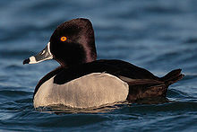
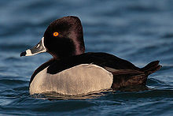

| Ring-necked Duck | |
|---|---|
|  | |
| Drake (male) | |
| Conservation status | |
| Binomial name | |
| Aythya collaris (Donovan, 1809) |
| Ring-necked Duck | |
|---|---|
|  | |
| Drake (male) | |
| Conservation status | |
| Binomial name | |
| Aythya collaris (Donovan, 1809) |
The Ring-necked Duck (Aythya collaris) is a smaller diving duck from North America.
The adult male is similar in color pattern to the Eurasian Tufted Duck, its relative. It has a grey bill with a white band, a shiny purple head, a white breast, yellow eyes and a dark grey back. The adult female has a pale brown head and body with a dark brown back, a dark bill with a more subtle light band than the male and brown eyes. The cinnamon neck ring is usually difficult to observe, unlike the white ring on its bill, which is why the bird is sometimes referred to as a "ringbill".
Their breeding habitat is wooded lakes or ponds in the northern United States and Canada. They overwinter in southern North America, usually in lakes, ponds, rivers or bays.
These birds feed mainly by diving. They eat aquatic plants as well as some molluscs, aquatic insects and small fish.
The nest is bowl-shaped, built with aquatic vegetation and lined with down, in a dry location near open water. The female lays 8 to 10 eggs and may remain with the young until they are able to fly.

{kind=link}
{kind=link}